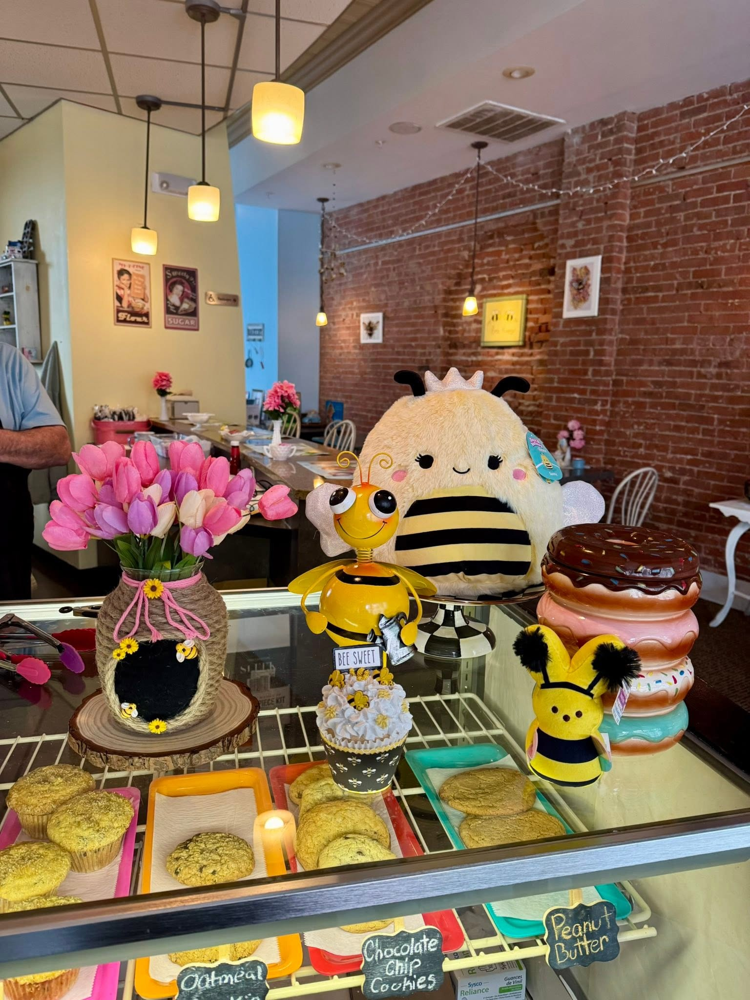
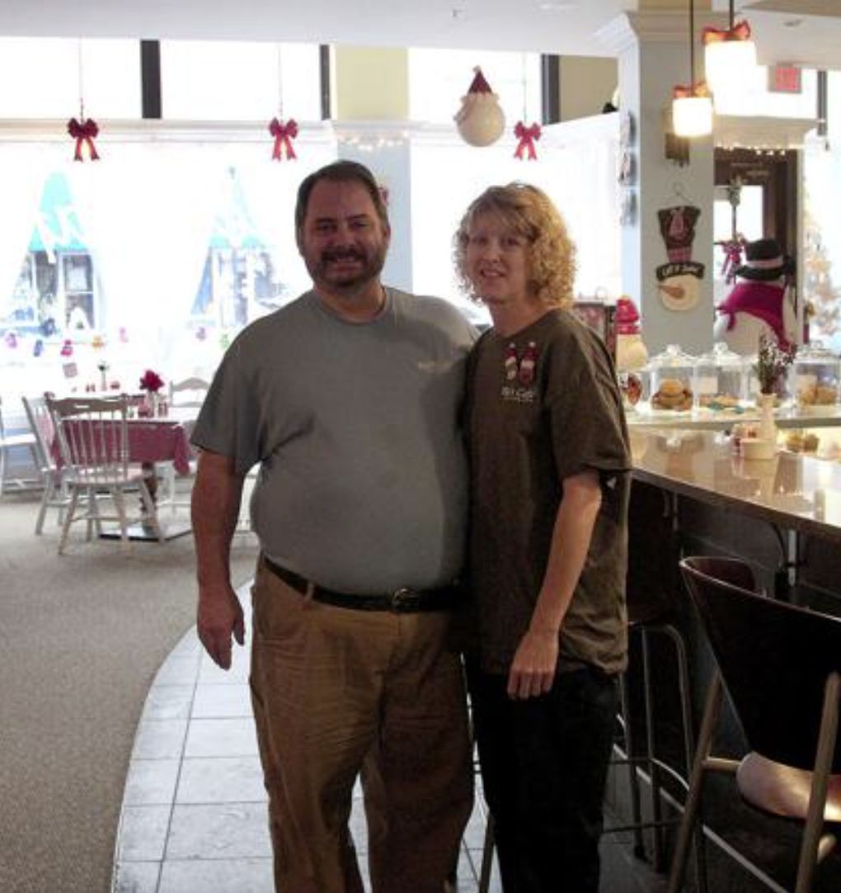
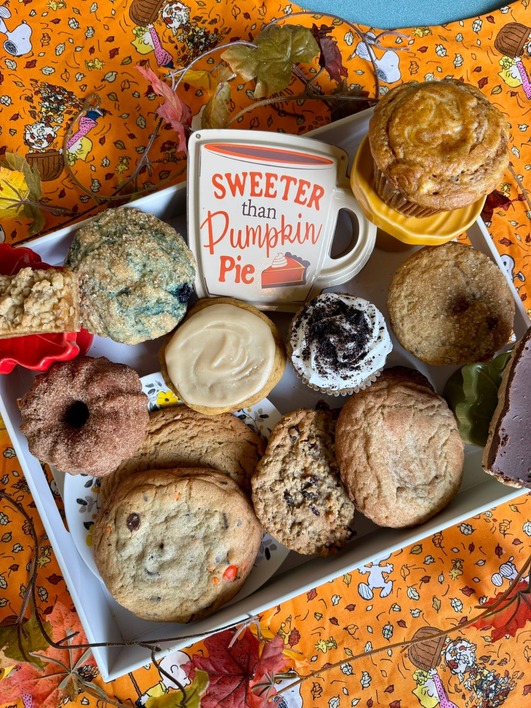
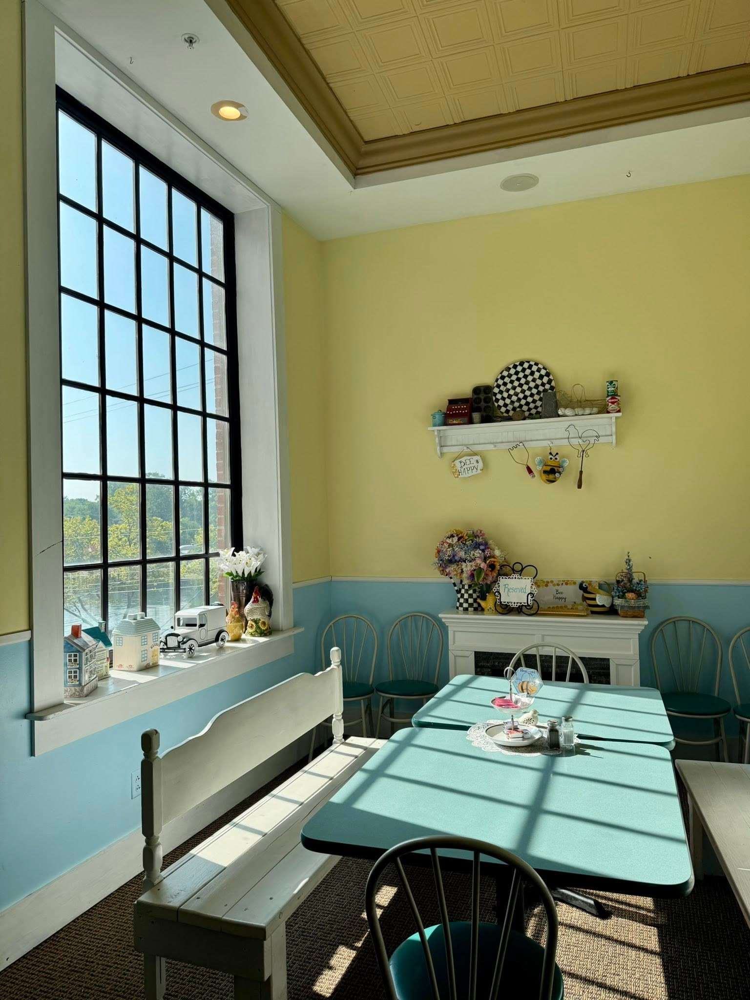
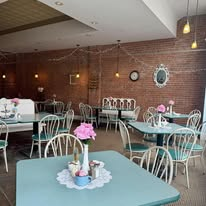
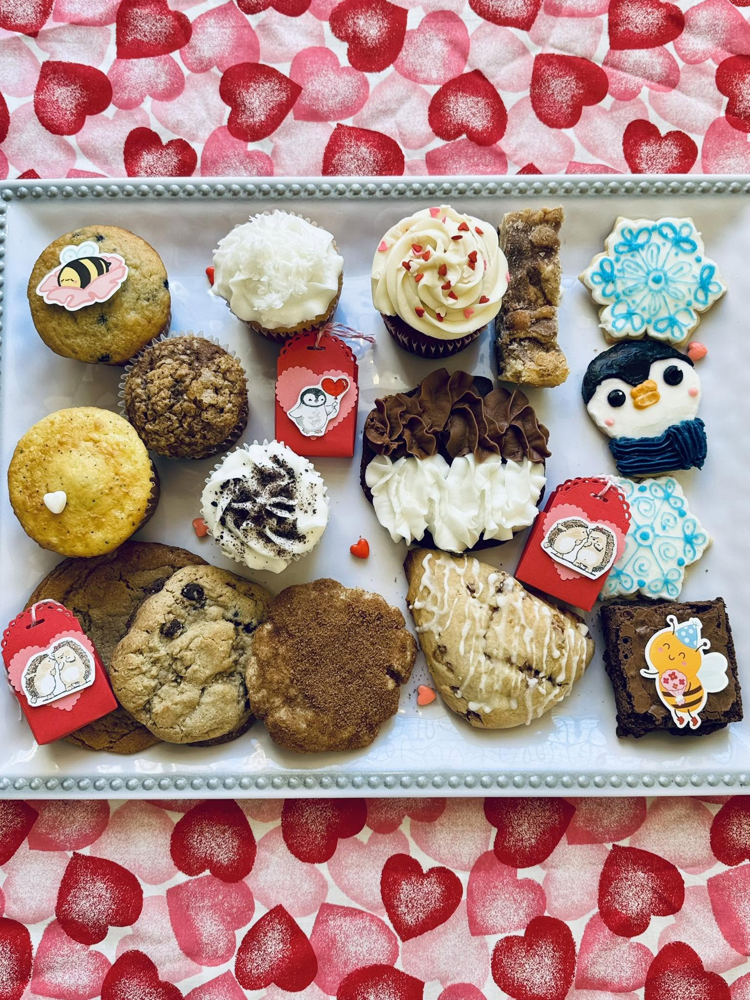
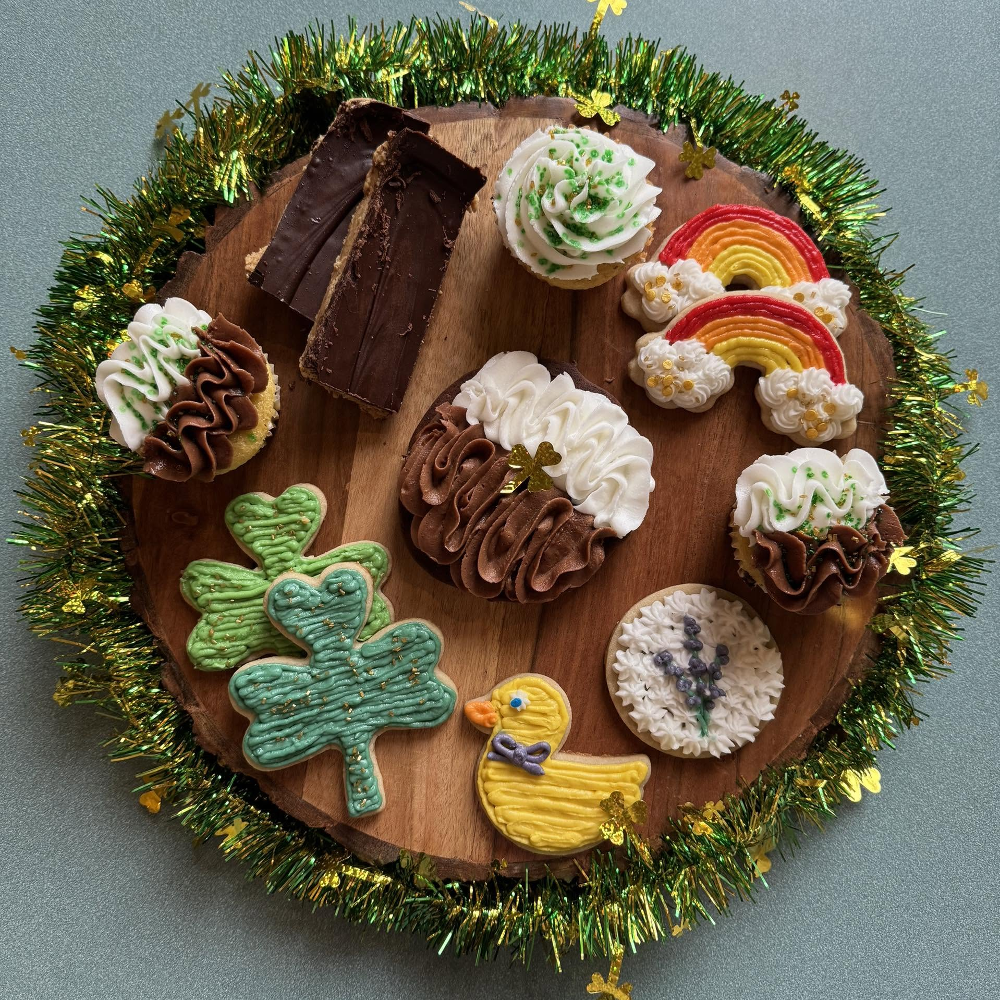
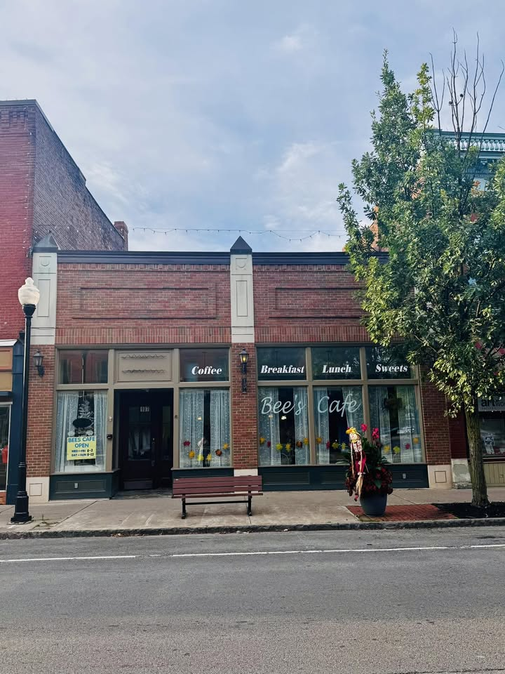

From the Bakery
Homemade cookies, muffins, cakes, and other sweet creations.
Come in for a cozy breakfast, a satisfying lunch, and something freshly baked at Bee's Café.
We're a family-owned café in the heart of downtown Seneca Falls, serving breakfast, lunch, and homemade baked goods with plenty of heart.
Freshly baked goodness from Debbie's kitchen.
Comforting café favorites for your day.
Cookies, cakes, muffins, and more.

Bee's Café began with a love of baking. Chris and Debbie Boulter first opened Bee's Cake and Cookies, making specialty cakes and cookies before expanding into breakfast and lunch.
In 2017, they brought their vision to a larger space on Fall Street, where homemade breads, baked goods, and welcoming hospitality became part of the café's story.
“The bumble bee is my symbol. I like to be busy, always buzzing around in the bakery.”— Debbie Boulter
From morning favorites to bakery treats, there's always something to enjoy.

Homemade cookies, muffins, cakes, and other sweet creations.

Beautifully made treats for everyday cravings and special occasions.

Settle in for breakfast or lunch in our cozy downtown café.
Always buzzing. Always baking.
A little sweetness goes a long way.Good food, cozy corners, and a little bee-inspired charm.




We're in downtown Seneca Falls, New York. Stop by for a meal or something sweet to take home.
For current hours, menu updates, and announcements, visit our Facebook page.